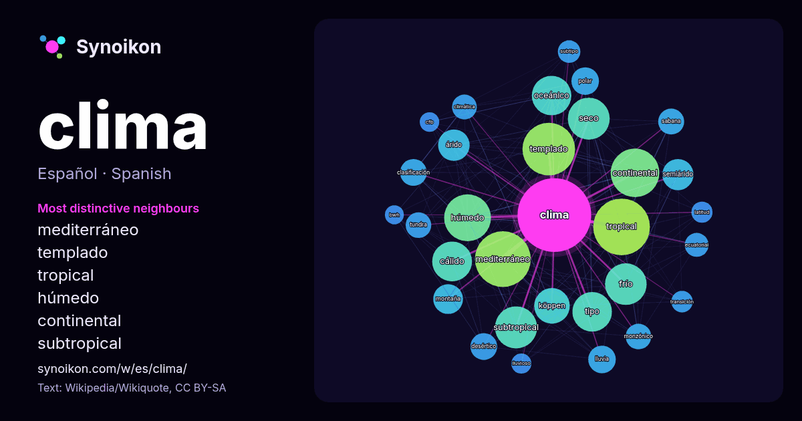

Español · palabra popular
clima
“climate” · Las palabras encontradas a su alrededor en 1512 apariciones de Wikipedia, Wikiquote.

Vecinos más característicos
- mediterráneo 122×
- templado 122×
- tropical 107×
- húmedo 92×
- continental 89×
- subtropical 78×
- oceánico 73×
- frío 70×
- cálido 70×
- seco 69×
- köppen 60×
- árido 47×
- semiárido 47×
- desértico 35×
- polar 34×
- monzónico 32×
- tundra 32×
- sabana 31×
- lluvia 29×
- climática 28×
× = cuántas veces más que en el texto general de Wikipedia.
Vecinos más frecuentes
- tropical 152
- mediterráneo 147
- templado 131
- continental 112
- húmedo 104
- subtropical 84
- seco 83
- frío 82
- cálido 75
- oceánico 74
- tipo 74
- köppen 60
- zona 51
- árido 47
- semiárido 46
- montaña 42
- lluvia 36
- polar 36
- norte 35
- clasificación 34
En contexto
- (letra E). La letra B la destina a los climas secos con dos tipos: BS, clima semidesértico o estepario y BW, o clima desértico propiamente dicho. Por último Wikipedia snippets · Clima
- El clima oceánico o atlántico, también llamado marítimo, o británico, es un tipo de clima templado húmedo propio de latitudes templadas común en las regiones Wikipedia snippets · Clima oceánico
- El clima tropical de sabana o clima tropical húmedo-seco, es un subtipo de clima tropical caracterizado por poseer al menos dos estaciones bien definidas Wikipedia snippets · Clima tropical de sabana
- El clima mediterráneo o clima templado húmedo-seco es un subtipo de clima templado.Se caracteriza por inviernos frescos suavizados y lluviosos y veranos Wikipedia snippets · Clima mediterráneo
- El clima mediterráneo continentalizado o clima mediterráneo de interior es un clima templado con características del clima mediterráneo y del clima continental Wikipedia snippets · Clima mediterráneo continentalizado
- El clima templado subhúmedo o templado monzónico, también llamado clima tropical de altitud (en la clasificación climática de Köppen clima Cw), es un Wikipedia snippets · Clima templado subhúmedo
- El clima templado o mesotérmico es un tipo de clima intermedio entre el clima cálido y el clima frío. Sin embargo, los límites y alcance del término clima Wikipedia snippets · Clima templado
- Un clima subtropical húmedo, pampeano o chino es un subtipo de clima templado húmedo, en la clasificación climática de Köppen es Cfa. Es una zona de clima Wikipedia snippets · Clima subtropical húmedo
Más palabras
- agua
- arte
- bosque
- caballo
- camino
- campana
- canción
- ciencia
- ciudad
- comida
- corazón
- desierto
- dinero
- dios
- espejo
- estrella
- familia
- fuerza
- gato
- historia
- invierno
- isla
- jardín
- lengua
- lluvia
- madre
- mapa
- miel
- montaña
- muerte
- naturaleza
- oro
- otoño
- pan
- perro
- puente
- reloj
- sal
- salud
- silencio
- sombra
- tiempo
- tormenta
- trabajo
- tren
- té
- verano
- verdad
- vida
Precalculado el 2026-10-09 con los ajustes predeterminados (±5 palabras, corpus mediano). El mapa interactivo puede actualizarlo con datos en vivo.
Interfaz traducida automáticamente; se agradecen correcciones.